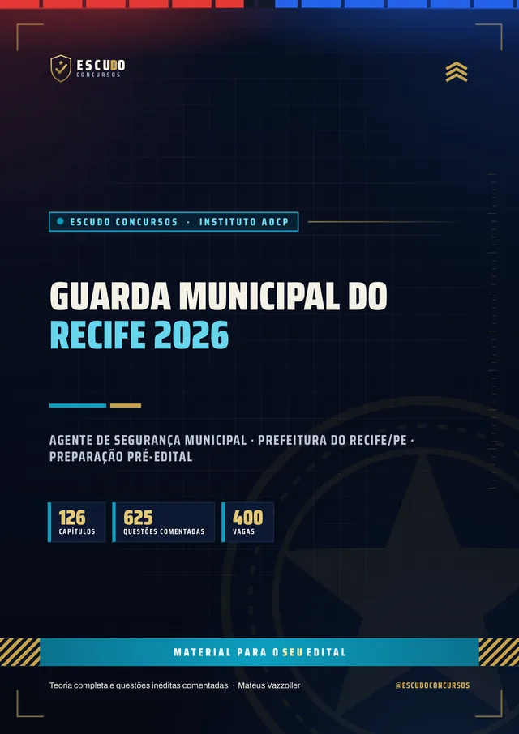
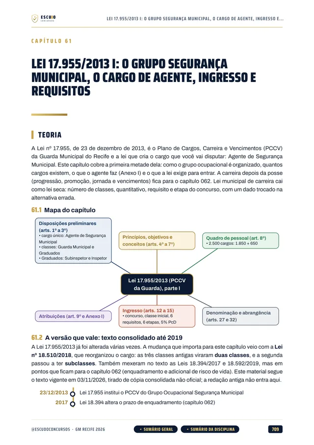
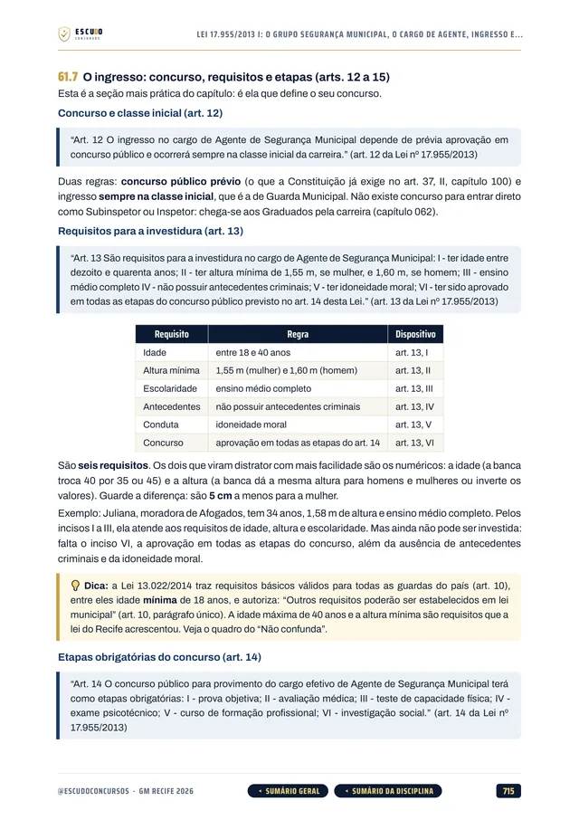
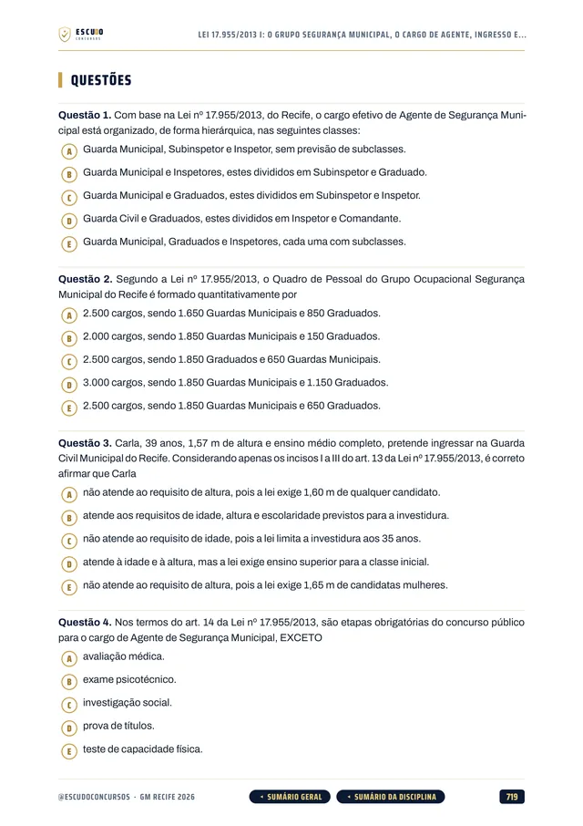
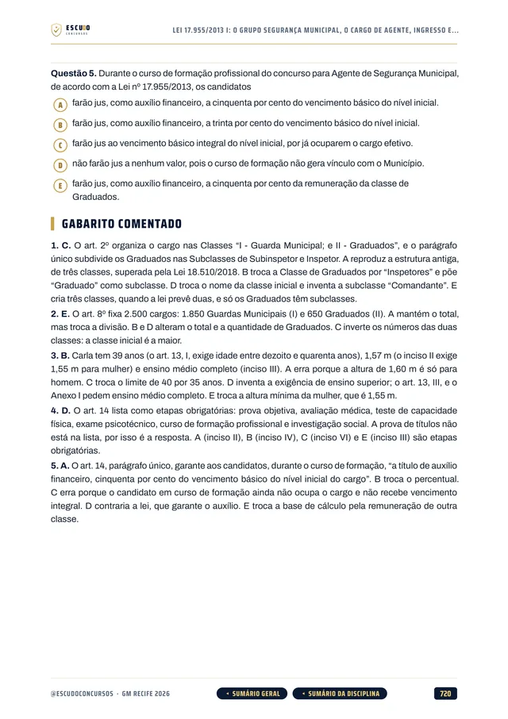
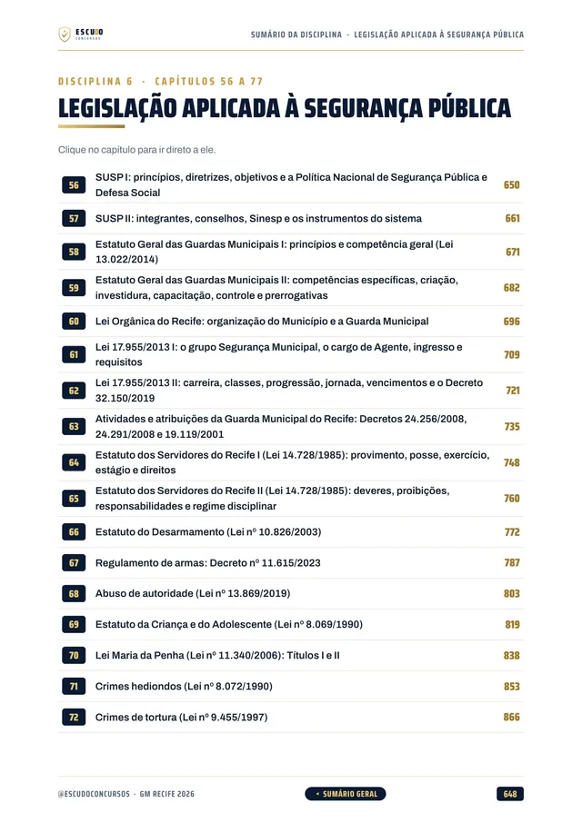
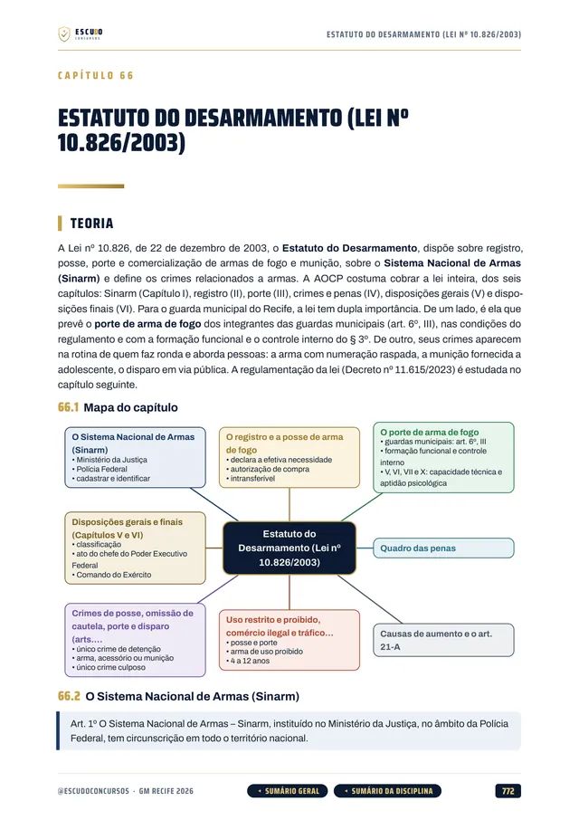
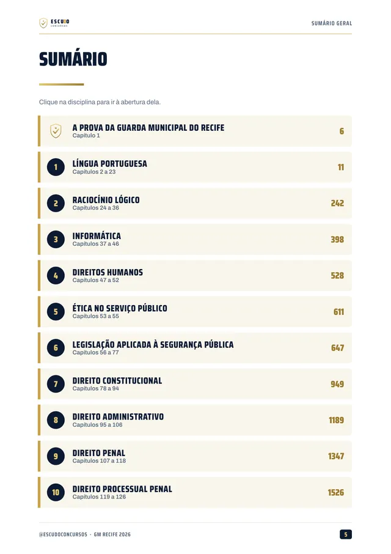
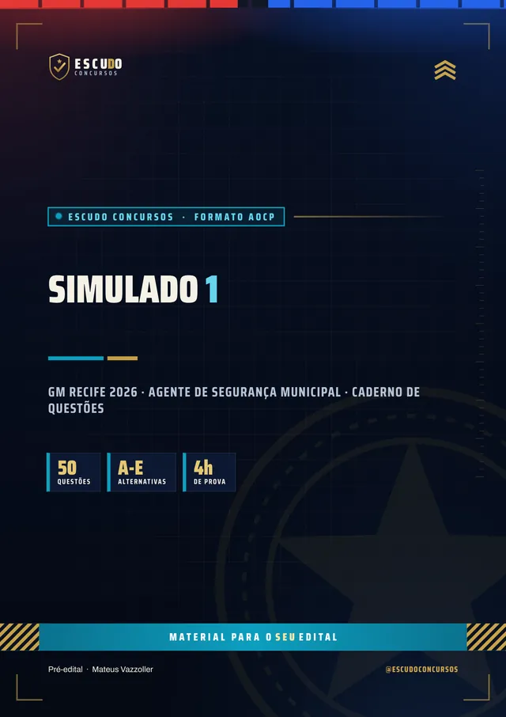

Simulado 1
No meio do caminho
Para medir onde você está e ajustar o estudo enquanto ainda dá tempo.
30 dias após a compra
Material independente, sem vínculo com a Prefeitura do Recife.


625questões
comentadas
ConcursoGM Recife2026 · Agente
Briefing
São 400 vagas para a Guarda Municipal do Recife, a banca é o Instituto AOCP e o edital ainda não saiu. O seu material cobre as dez disciplinas que a Prefeitura já definiu? Curso feito a partir do Termo de Referência de 25/08/2026, item por item, com questões de 5 alternativas e gabarito comentado.
de R$ 47 por 21% OFF
R$37
com o cupom GMRECIFE37 até 31/12/2026. Pelo botão, o cupom já vai preenchido.
R$47
Curso completo, com acesso imediato.
Terreno
O concurso
A Prefeitura do Recife prepara o concurso para Agente de Segurança Municipal, da Guarda Municipal, com 400 vagas e organização do Instituto AOCP. O Termo de Referência de 25 de agosto de 2026 já fixa as dez disciplinas da prova objetiva. O edital ainda não foi publicado: não há data de inscrição nem de prova, e o número de questões por disciplina neste curso é uma estimativa (simulados de 50 questões).
Estudar agora pelo programa do Termo de Referência economiza meses. Quando o edital sair, o programa será conferido item por item e o curso, ajustado.
| Disciplina | Capítulos |
|---|---|
| Língua Portuguesa | 22 |
| Raciocínio Lógico | 13 |
| Informática | 10 |
| Direitos Humanos | 6 |
| Ética no Serviço Público | 3 |
| Legislação aplicada à Segurança Pública | 22 |
| Direito Constitucional | 17 |
| Direito Administrativo | 12 |
| Direito Penal | 12 |
| Direito Processual Penal | 8 |
| Mais o capítulo 001, sobre como é a prova e como usar o curso. | 126 |
Protocolo
O formato
Você estuda lendo, no seu ritmo, pela área de membros da Hotmart ou com os arquivos baixados. O curso foi feito a partir do Termo de Referência de 25/08/2026, disciplina por disciplina, com a legislação federal e as leis do Recife conferidas no texto oficial vigente em novembro de 2026.
Reconhecimento
Páginas reais do PDF
Toque numa página para ver em tamanho maior.




100% em PDF · Garantia de 7 dias · Pagamento pela Hotmart
Leia uma amostra grátis: a apresentação e 10 questões comentadas
Equipamento
O que você recebe
Curso em PDF organizado em módulos pelas disciplinas da prova, com 1.655 páginas no padrão visual ESCUDO, para ler no computador, no tablet, no celular ou no app da Hotmart. Não há videoaulas.
126 capítulos cobrindo as dez disciplinas do Termo de Referência: Língua Portuguesa, Raciocínio Lógico, Informática, Direitos Humanos, Ética no Serviço Público, Legislação aplicada à Segurança Pública, Direito Constitucional, Direito Administrativo, Direito Penal e Direito Processual Penal.
625 questões inéditas com 5 alternativas, de (A) a (E), todas com gabarito comentado: por que a correta está correta e onde erra cada uma das outras quatro.
Legislação aplicada à Segurança Pública em 22 capítulos: SUSP, Estatuto Geral das Guardas Municipais (Lei 13.022/2014), Lei Orgânica do Recife, carreira da Guarda (Lei 17.955/2013), atividades e atribuições da Guarda do Recife e Estatuto dos Servidores do Recife (Lei 14.728/1985).

Na mesma disciplina, a legislação geral: Estatuto do Desarmamento, regulamento de armas, abuso de autoridade, ECA, Maria da Penha, crimes hediondos, tortura, Lei de Drogas, crimes ambientais e Código de Trânsito.

Teoria com recursos para memorizar: mapa de cada capítulo, esquemas, quadros de "pegadinha" e "não confunda", casos práticos de ronda, resumo e pontos-chave de revisão.
Navegação clicável: do sumário você vai direto à disciplina e ao capítulo, e volta pelos botões do rodapé.

2 simulados inéditos de 50 questões de 5 alternativas, cada um com caderno de comentários. O Simulado 1 vem aos 30 dias e o Simulado 2 aos 60 dias após a compra.

Plano de ação
Área de membros
| Módulo | Conteúdo | Liberação |
|---|---|---|
| M0 Comece aqui | Apresentação + capítulo 001 (como é a prova e como usar o curso). Bônus: PDF completo para baixar e imprimir | Na compra; o PDF completo no 8º dia |
| M1 Língua Portuguesa | Capítulos 002 a 023 | Na compra |
| M2 Raciocínio Lógico | Capítulos 024 a 036 | Na compra |
| M3 Informática | Capítulos 037 a 046 | Na compra |
| M4 Direitos Humanos | Capítulos 047 a 052 | Na compra |
| M5 Ética no Serviço Público | Capítulos 053 a 055 | Na compra |
| M6 Legislação aplicada à Segurança Pública | Capítulos 056 a 077 | Na compra |
| M7 Direito Constitucional | Capítulos 078 a 094 | Na compra |
| M8 Direito Administrativo | Capítulos 095 a 106 | Na compra |
| M9 Direito Penal | Capítulos 107 a 118 | Na compra |
| M10 Direito Processual Penal | Capítulos 119 a 126 | Na compra |
| M11 Simulado 1 | 50 questões, caderno de comentários | 30 dias após a compra |
| M12 Simulado 2 | 50 questões, caderno de comentários | 60 dias após a compra |
Treinamento
Treino no formato da prova
Cada simulado tem 50 questões de 5 alternativas, cobrindo as dez disciplinas do programa, com caderno de comentários. O número de questões é estimado até o edital sair.
Simulado 1
Para medir onde você está e ajustar o estudo enquanto ainda dá tempo.
30 dias após a compra
Simulado 2
Cobre o programa inteiro de novo, para o seu teste final.
60 dias após a compra
Perfil
Para quem é
Para quem vai prestar a Guarda Municipal do Recife e quer começar já, pelo programa do Termo de Referência, sem esperar o edital e sem perder tempo com assunto que não cai.
Proteção
Você tem 7 dias de garantia pela Hotmart. Se não for o que você esperava, pede o reembolso pela própria Hotmart, dentro do prazo.
Cronograma
Sem surpresa na área de membros
Na compra: todas as disciplinas em PDF, uma por módulo, com a teoria e as questões comentadas. É o curso inteiro, para começar a estudar no mesmo dia.
8 dias após a compra: o PDF completo para imprimir. É o mesmo conteúdo dos módulos num arquivo só, liberado depois da garantia de 7 dias.
Simulado 1: 30 dias após a compra, para medir onde você está no meio da preparação.
Simulado 2: 60 dias após a compra, porque ainda não há data de prova marcada.
O PDF completo e os simulados aparecem bloqueados na área de membros até a data de cada um: não é conteúdo faltando, é a liberação programada.
Instrução
Dúvidas
Não. É um curso 100% em PDF: teoria, questões comentadas e simulados para ler e resolver.
O acesso é imediato depois da confirmação do pagamento, pela área de membros da Hotmart (web ou app). O PDF completo para baixar e imprimir é liberado no 8º dia.
O Simulado 1 é liberado 30 dias após a compra e o Simulado 2, 60 dias após a compra.
Ainda não. O curso segue o Termo de Referência de 25/08/2026, que fixa as dez disciplinas da prova. Quando o edital da AOCP sair, o programa será conferido item por item e o curso, ajustado.
Sim. A Legislação traz a Lei Orgânica do Recife, a carreira da Guarda (Lei 17.955/2013), as atividades e atribuições da Guarda Municipal do Recife e o Estatuto dos Servidores (Lei 14.728/1985), além da Lei 13.022/2014.
O curso segue o formato de múltipla escolha com cinco alternativas, de (A) a (E), e uma só correta, que é o usado pela AOCP. Quando o edital sair, o formato será conferido.
Não. As 625 questões de treino e as dos simulados são inéditas, escritas a partir do conteúdo do Termo de Referência.
Você tem 7 dias de garantia pela Hotmart. Se não for o que você esperava, pede o reembolso.
Missão
GM Recife 2026
de R$ 47 por 21% OFF
R$37
com o cupom GMRECIFE37 até 31/12/2026.
R$47
Curso completo, com acesso imediato.
Material para o SEU edital. ESCUDO Concursos.
Continue estudando
 PMPE 2026 · Instituto AOCPSoldado da PM de Pernambuco
PMPE 2026 · Instituto AOCPSoldado da PM de Pernambuco CBMPE 2026 · Instituto AOCPSoldado dos Bombeiros de Pernambuco
CBMPE 2026 · Instituto AOCPSoldado dos Bombeiros de Pernambuco Polícia Penal/PE 2026 · Edital aberto · CebraspePolicial Penal de Pernambuco
Polícia Penal/PE 2026 · Edital aberto · CebraspePolicial Penal de PernambucoGuia do concurso: edital, vagas e o que cai · Ver todos: Guarda Municipal · Concursos em Pernambuco